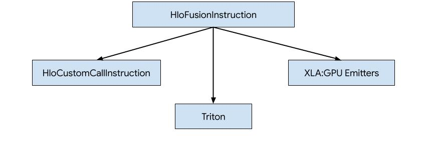
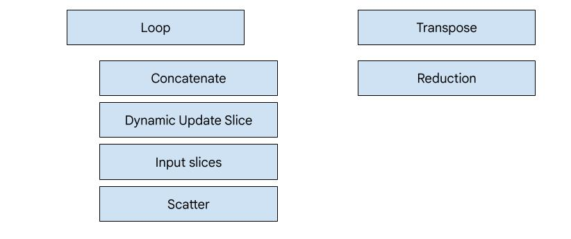
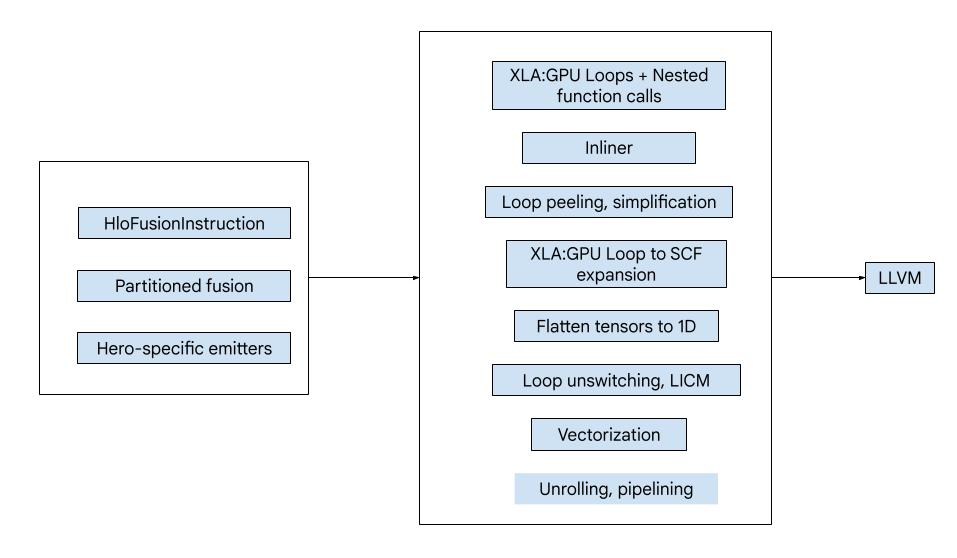
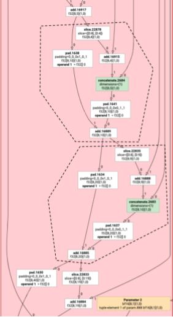
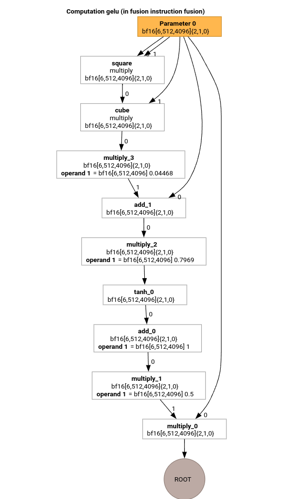
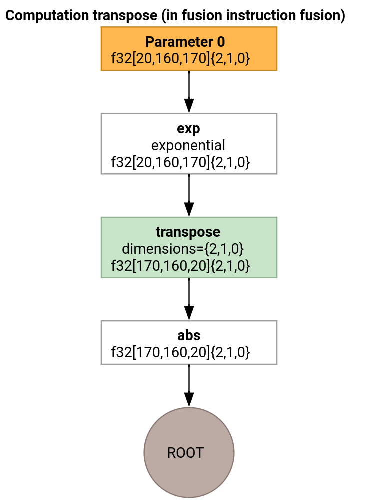

XLA:GPU Emitters#
There are three ways how to generate code for HLO in XLA:GPU.

Replacing HLO with custom calls to external libraries, e.g. NVidia cuBLAS, cuDNN.
Tiling HLO to block-level and then using OpenAI Triton.
Using XLA Emitters to progressively lower HLO to LLVM IR.
This document is focused on XLA:GPU Emitters.
Hero-based codegen#
There are 7 emitter types in XLA:GPU. Each emitter type corresponds to a “hero” of the fusion, i.e. the most important op in the fused computation that shapes the code generation for the whole fusion.

For example, the tranpose emitter will be selected if there is a
HloTransposeInstruction within the fusion that requires using shared memory to
improve the memory reading and writing patterns. The reduction emitter generates
reductions using shuffles and shared memory. The loop emitter is the default
emitter. If a fusion does not have a hero for which we have a special emitter,
then the loop emitter will be used.
High-level overview#
The code consists of the following big building blocks:
Computation partitioner - splitting an HLO fusion computation into functions
Emitters - converting partitioned HLO fusion to MLIR (
xla_gpu,tensor,arith,math,scfdialects)Compilation pipeline - optimizes and lowers IR to LLVM

Partitioning#
See computation_partitioner.h.
Non-elementwise HLO instructions cannot always be emitted together. Consider the following HLO graph:
param
|
log
| \
| transpose
| /
add
If we emit this in a single function, the log will be accessed at two
different indices for each element of the add. The old emitters solve this
problem by generating the log twice. For this particular graph, this is not
a problem, but when there are multiple splits, the code size grows
exponentially.
Here, we solve this problem by partitioning the graph into pieces that can be safely emitted as one function. The criteria are:
Instructions that have only one user are safe to emit together with their user.
Instructions that have multiple users are safe to emit together with their users if they are accessed through the same indices by all users.
In the example above, the add and tranpose access different indices of the
log, so it is not safe to emit it together with them.
The graph is therefore partitioned into three functions (each containing just one instruction).
The same is applicable to the following example with slice and pad of add.

Elemental emission#
Elemental emission creates loops and math/arith ops for HloInstructions. For
the most part, this is straightforward, but there are some interesting things
going on here.
Indexing transformations#
Some instructions (transpose, broadcast, reshape, slice, reverse and
a few more) are purely transformations on indices: to produce an element of the
result, we need to produce some other element of the input. For this, we can
reuse XLA’s indexing_analysis, which has
functions to produce the output to input mapping for an instruction.
For example, for a transpose from [20,40] to [40,20], it will produce the
following indexing map (one affine expression per input dimension; d0 and d1 are
the output dimensions):
(d0, d1) -> d1
(d0, d1) -> d0
So for these pure index transformation instructions, we can simply get the map, apply it to the output indices, and produce the input at the resulting index.
Similarly, the pad op uses indexing maps and constraints for most of the
implementation. pad is also an indexing transformation with some added checks
to see if we return an element of the input or the padding value.
Tuples#
We do not support internal tuples. We also do not support nested tuple
outputs. All XLA graphs that use these features can be converted to graphs that
do not.
Gather#
We only support canonical gathers as produced by gather_simplifier.
Subgraph functions#
For a subgraph of a computation with parameters %p0 to %p_n, and subgraph
roots with r dimensions and element types (e0 to e_m), we use the
following MLIR function signature:
(%p0: tensor<...>, %p1: tensor<...>, ..., %pn: tensor<...>,
%i0: index, %i1: index, ..., %i_r-1: index) -> (e0, ..., e_m)
That is, we have one tensor input per computation parameter, one index input per dimension of the output, and one result per output.
To emit a function, we simply use the elemental emitter above, and recursively
emit its operands until we reach the edge of the subgraph. Then, we:emit a
tensor.extract for parameters or emit a func.call for other subgraphs
Entry function#
Each emitter type differs in how it generates the entry function, i.e. the function for the hero. The entry function is different from the functions above, since it has no indices as inputs (just the thread and block IDs) and actually needs to write the output somewhere. For the loop emitter, this is fairly straightforward, but the transpose and reduction emitters have non-trivial write logic.
The signature of the entry computation is:
(%p0: tensor<...>, ..., %pn: tensor<...>,
%r0: tensor<...>, ..., %rn: tensor<...>) -> (tensor<...>, ..., tensor<...>)
Where like before, the %pns are the parameters of the computation, and the
%rns are the results of the computation. The entry computation takes the
results as tensors, tensor.inserts updates into them, and then returns them.
No other uses of the output tensors are allowed.
Compilation pipeline#
Loop emitter#
See loop.h.
Let’s study the most important passes of the MLIR compilation pipeline using the HLO for the GELU function.

This HLO computation only has elementwise ops, constants and broadcasts. It will be emitted using the loop emitter.
MLIR Conversion#
After conversion to MLIR we get an xla_gpu.loop that depends on
%thread_id_x and %block_id_x and defines the loop that traverses all
elements of the output linearly to guarantee coalesced writes.
On every iteration of this loop we call
%pure_call = xla_gpu.pure_call @gelu(%input, %dim0, %dim1, %dim2)
: (tensor<6x512x4096xbf16>, index, index, index) -> bf16
to compute elements of the root operation. Note, that we have only one outlined
function for @gelu, because the partitioner did not detect a tensor that has 2
or more various access patterns.
#map = #xla_gpu.indexing_map<"(th_x, bl_x)[vector_index] -> ("
"bl_x floordiv 4096, (bl_x floordiv 8) mod 512, (bl_x mod 8) * 512 + th_x * 4 + vector_index),"
"domain: th_x in [0, 127], bl_x in [0, 24575], vector_index in [0, 3]">
func.func @main(%input: tensor<6x512x4096xbf16> , %output: tensor<6x512x4096xbf16>)
-> tensor<6x512x4096xbf16> {
%thread_id_x = gpu.thread_id x {xla.range = [0 : index, 127 : index]}
%block_id_x = gpu.block_id x {xla.range = [0 : index, 24575 : index]}
%xla_loop = xla_gpu.loop (%thread_id_x, %block_id_x)[%vector_index] -> (%dim0, %dim1, %dim2)
in #map iter_args(%iter = %output) -> (tensor<6x512x4096xbf16>) {
%pure_call = xla_gpu.pure_call @gelu(%input, %dim0, %dim1, %dim2)
: (tensor<6x512x4096xbf16>, index, index, index) -> bf16
%inserted = tensor.insert %pure_call into %iter[%dim0, %dim1, %dim2] : tensor<6x512x4096xbf16>
xla_gpu.yield %inserted : tensor<6x512x4096xbf16>
}
return %xla_loop : tensor<6x512x4096xbf16>
}
func.func private @gelu(%arg0: tensor<6x512x4096xbf16>, %i: index, %j: index, %k: index) -> bf16 {
%cst = arith.constant 5.000000e-01 : bf16
%cst_0 = arith.constant 1.000000e+00 : bf16
%cst_1 = arith.constant 7.968750e-01 : bf16
%cst_2 = arith.constant 4.467770e-02 : bf16
%extracted = tensor.extract %arg0[%i, %j, %k] : tensor<6x512x4096xbf16>
%0 = arith.mulf %extracted, %extracted : bf16
%1 = arith.mulf %0, %extracted : bf16
%2 = arith.mulf %1, %cst_2 : bf16
%3 = arith.addf %extracted, %2 : bf16
%4 = arith.mulf %3, %cst_1 : bf16
%5 = math.tanh %4 : bf16
%6 = arith.addf %5, %cst_0 : bf16
%7 = arith.mulf %6, %cst : bf16
%8 = arith.mulf %extracted, %7 : bf16
return %8 : bf16
}
Inliner#
After @gelu is inlined, we get a single @main function. It can happen that
the same function is called twice or more. In this case we don’t inline. More
details on the inlining rules can be found in
xla_gpu_dialect.cc.
func.func @main(%arg0: tensor<6x512x4096xbf16>, %arg1: tensor<6x512x4096xbf16>) -> tensor<6x512x4096xbf16> {
...
%thread_id_x = gpu.thread_id x {xla.range = [0 : index, 127 : index]}
%block_id_x = gpu.block_id x {xla.range = [0 : index, 24575 : index]}
%xla_loop = xla_gpu.loop (%thread_id_x, %block_id_x)[%vector_index] -> (%dim0, %dim1, %dim2)
in #map iter_args(%iter = %output) -> (tensor<6x512x4096xbf16>) {
%extracted = tensor.extract %input[%dim0, %dim1, %dim2] : tensor<6x512x4096xbf16>
%0 = arith.mulf %extracted, %extracted : bf16
%1 = arith.mulf %0, %extracted : bf16
%2 = arith.mulf %1, %cst : bf16
%3 = arith.addf %extracted, %2 : bf16
%4 = arith.mulf %3, %cst_0 : bf16
%5 = math.tanh %4 : bf16
%6 = arith.addf %5, %cst_1 : bf16
%7 = arith.mulf %6, %cst_2 : bf16
%8 = arith.mulf %extracted, %7 : bf16
%inserted = tensor.insert %8 into %iter[%dim0, %dim1, %dim2] : tensor<6x512x4096xbf16>
xla_gpu.yield %inserted : tensor<6x512x4096xbf16>
}
return %xla_loop : tensor<6x512x4096xbf16>
}
xla_gpu to scf conversion#
xla_gpu.loop represents a loop nest with a boundary check inside. If the loop
inductions variables are out of bounds of the indexing map domain, then this
iteration is skipped. It means, that the loop is converted to 1 or more nested
scf.for ops with an scf.if inside.
%xla_loop = scf.for %vector_index = %c0 to %c4 step %c1 iter_args(%iter = %output) -> (tensor<6x512x4096xbf16>) {
%2 = arith.cmpi sge, %thread_id_x, %c0 : index
%3 = arith.cmpi sle, %thread_id_x, %c127 : index
%4 = arith.andi %2, %3 : i1
%5 = arith.cmpi sge, %block_id_x, %c0 : index
%6 = arith.cmpi sle, %block_id_x, %c24575 : index
%7 = arith.andi %5, %6 : i1
%inbounds = arith.andi %4, %7 : i1
%9 = scf.if %inbounds -> (tensor<6x512x4096xbf16>) {
%dim0 = xla_gpu.apply_indexing #map(%thread_id_x, %block_id_x)[%vector_index]
%dim1 = xla_gpu.apply_indexing #map1(%thread_id_x, %block_id_x)[%vector_index]
%dim2 = xla_gpu.apply_indexing #map2(%thread_id_x, %block_id_x)[%vector_index]
%extracted = tensor.extract %input[%dim0, %dim1, %dim2] : tensor<6x512x4096xbf16>
// ... more arithmetic operations
%29 = arith.mulf %extracted, %28 : bf16
%inserted = tensor.insert %29 into %iter[%dim0, %dim1, %dim2] : tensor<6x512x4096xbf16>
scf.yield %inserted : tensor<6x512x4096xbf16>
} else {
scf.yield %iter : tensor<6x512x4096xbf16>
}
scf.yield %9 : tensor<6x512x4096xbf16>
}
Flatten tensors#
See flatten_tensors.cc.
The N-d tensors are projected onto 1D. This will simplify the vectorization and the lowering to LLVM because every tensor access now corresponds to how the data is aligned in memory.
#map = #xla_gpu.indexing_map<"(th_x, bl_x, vector_index) -> (th_x * 4 + bl_x * 512 + vector_index),"
"domain: th_x in [0, 127], bl_x in [0, 24575], vector_index in [0, 3]">
func.func @main(%input: tensor<12582912xbf16>, %output: tensor<12582912xbf16>) -> tensor<12582912xbf16> {
%xla_loop = scf.for %vector_index = %c0 to %c4 step %c1 iter_args(%iter = %output) -> (tensor<12582912xbf16>) {
%dim = xla_gpu.apply_indexing #map(%thread_id_x, %block_id_x, %vector_index)
%extracted = tensor.extract %input[%dim] : tensor<12582912xbf16>
%2 = arith.mulf %extracted, %extracted : bf16
%3 = arith.mulf %2, %extracted : bf16
%4 = arith.mulf %3, %cst_2 : bf16
%5 = arith.addf %extracted, %4 : bf16
%6 = arith.mulf %5, %cst_1 : bf16
%7 = math.tanh %6 : bf16
%8 = arith.addf %7, %cst_0 : bf16
%9 = arith.mulf %8, %cst : bf16
%10 = arith.mulf %extracted, %9 : bf16
%inserted = tensor.insert %10 into %iter[%dim] : tensor<12582912xbf16>
scf.yield %inserted : tensor<12582912xbf16>
}
return %xla_loop : tensor<12582912xbf16>
}
Vectorization#
See vectorize_loads_stores.cc.
The pass analyses the indices in the tensor.extract and tensor.insert ops
and if they are produced by xla_gpu.apply_indexing that accesses the elements
contiguously w.r.t. to the %vector_index and the access is aligned, then
tensor.extract is converted to vector.transfer_read and hoisted out of the
loop.
In this particular case, there is an indexing map
(th_x, bl_x, vector_index) -> (th_x * 4 + bl_x * 512 + vector_index) used to
compute elements to extract and insert in a scf.for loop from 0 to 4.
Therefore, both tensor.extract and tensor.insert can be vectorized.
func.func @main(%input: tensor<12582912xbf16>, %output: tensor<12582912xbf16>) -> tensor<12582912xbf16> {
%vector_0 = arith.constant dense<0.000000e+00> : vector<4xbf16>
%0 = xla_gpu.apply_indexing #map(%thread_id_x, %block_id_x, %c0)
%2 = vector.transfer_read %input[%0], %cst {in_bounds = [true]} : tensor<12582912xbf16>, vector<4xbf16>
%xla_loop:2 = scf.for %vector_index = %c0 to %c4 step %c1
iter_args(%iter = %output, %iter_vector = %vector_0) -> (tensor<12582912xbf16>, vector<4xbf16>) {
%5 = vector.extract %2[%vector_index] : bf16 from vector<4xbf16>
%6 = arith.mulf %5, %5 : bf16
%7 = arith.mulf %6, %5 : bf16
%8 = arith.mulf %7, %cst_4 : bf16
%9 = arith.addf %5, %8 : bf16
%10 = arith.mulf %9, %cst_3 : bf16
%11 = math.tanh %10 : bf16
%12 = arith.addf %11, %cst_2 : bf16
%13 = arith.mulf %12, %cst_1 : bf16
%14 = arith.mulf %5, %13 : bf16
%15 = vector.insert %14, %iter_vector [%vector_index] : bf16 into vector<4xbf16>
scf.yield %iter, %15 : tensor<12582912xbf16>, vector<4xbf16>
}
%4 = vector.transfer_write %xla_loop#1, %output[%0] {in_bounds = [true]}
: vector<4xbf16>, tensor<12582912xbf16>
return %4 : tensor<12582912xbf16>
}
Loop unrolling#
See optimize_loops.cc.
The loop unrolling finds scf.for loops that can be unrolled. In this case, the
loop over the elements of the vector disappears.
func.func @main(%input: tensor<12582912xbf16>, %arg1: tensor<12582912xbf16>) -> tensor<12582912xbf16> {
%cst_0 = arith.constant dense<0.000000e+00> : vector<4xbf16>
%dim = xla_gpu.apply_indexing #map(%thread_id_x, %block_id_x, %c0)
%2 = vector.transfer_read %input[%dim], %cst {in_bounds = [true]} : tensor<12582912xbf16>, vector<4xbf16>
%3 = vector.extract %2[%c0] : bf16 from vector<4xbf16>
...
%13 = vector.insert %12, %cst_0 [%c0] : bf16 into vector<4xbf16>
%14 = vector.extract %2[%c1] : bf16 from vector<4xbf16>
...
%24 = vector.insert %23, %13 [%c1] : bf16 into vector<4xbf16>
%25 = vector.extract %2[%c2] : bf16 from vector<4xbf16>
...
%35 = vector.insert %34, %24 [%c2] : bf16 into vector<4xbf16>
%36 = vector.extract %2[%c3] : bf16 from vector<4xbf16>
...
%46 = vector.insert %45, %35 [%c3] : bf16 into vector<4xbf16>
%47 = vector.transfer_write %46, %arg1[%dim] {in_bounds = [true]} : vector<4xbf16>, tensor<12582912xbf16>
return %47 : tensor<12582912xbf16>
}
Conversion to LLVM#
We mostly use the standard LLVM lowerings, but there are a few special passes.
We cannot use the memref lowerings for tensors, since we don’t bufferize the
IR and our ABI is not compatible with the memref ABI. Instead, we have a
custom lowering directly from tensors to LLVM.
The lowering of tensors is done in lower_tensors.cc.
tensor.extractis lowered tollvm.load,tensor.inserttollvm.store, in the obvious way.propagate_slice_indices and merge_pointers_to_same_slice together implement a detail of buffer assignment and XLA’s ABI: if two tensors share the same buffer slice, they are only passed once. These passes deduplicate the function arguments.
llvm.func @__nv_tanhf(f32) -> f32
llvm.func @main(%arg0: !llvm.ptr, %arg1: !llvm.ptr) {
%11 = nvvm.read.ptx.sreg.tid.x : i32
%12 = nvvm.read.ptx.sreg.ctaid.x : i32
%13 = llvm.mul %11, %1 : i32
%14 = llvm.mul %12, %0 : i32
%15 = llvm.add %13, %14 : i32
%16 = llvm.getelementptr inbounds %arg0[%15] : (!llvm.ptr, i32) -> !llvm.ptr, bf16
%17 = llvm.load %16 invariant : !llvm.ptr -> vector<4xbf16>
%18 = llvm.extractelement %17[%2 : i32] : vector<4xbf16>
%19 = llvm.fmul %18, %18 : bf16
%20 = llvm.fmul %19, %18 : bf16
%21 = llvm.fmul %20, %4 : bf16
%22 = llvm.fadd %18, %21 : bf16
%23 = llvm.fmul %22, %5 : bf16
%24 = llvm.fpext %23 : bf16 to f32
%25 = llvm.call @__nv_tanhf(%24) : (f32) -> f32
%26 = llvm.fptrunc %25 : f32 to bf16
%27 = llvm.fadd %26, %6 : bf16
%28 = llvm.fmul %27, %7 : bf16
%29 = llvm.fmul %18, %28 : bf16
%30 = llvm.insertelement %29, %8[%2 : i32] : vector<4xbf16>
...
}
Transpose emitter#
Let’s consider a slightly more involved example.

The transpose emitter differs from the loop emitter only in how the entry function is generated.
func.func @transpose(%arg0: tensor<20x160x170xf32>, %arg1: tensor<170x160x20xf32>) -> tensor<170x160x20xf32> {
%thread_id_x = gpu.thread_id x {xla.range = [0 : index, 127 : index]}
%block_id_x = gpu.block_id x {xla.range = [0 : index, 959 : index]}
%shmem = xla_gpu.allocate_shared : tensor<32x1x33xf32>
%xla_loop = xla_gpu.loop (%thread_id_x, %block_id_x)[%i, %j]
-> (%input_dim0, %input_dim1, %input_dim2, %shmem_dim0, %shmem_dim1, %shmem_dim2)
in #map iter_args(%iter = %shmem) -> (tensor<32x1x33xf32>) {
%extracted = tensor.extract %arg0[%input_dim0, %input_dim1, %input_dim2] : tensor<20x160x170xf32>
%0 = math.exp %extracted : f32
%inserted = tensor.insert %0 into %iter[%shmem_dim0, %shmem_dim1, %shmem_dim2] : tensor<32x1x33xf32>
xla_gpu.yield %inserted : tensor<32x1x33xf32>
}
%synced_tensor = xla_gpu.sync_threads %xla_loop : tensor<32x1x33xf32>
%xla_loop_0 = xla_gpu.loop (%thread_id_x %block_id_x)[%i, %j] -> (%dim0, %dim1, %dim2)
in #map1 iter_args(%iter = %arg1) -> (tensor<170x160x20xf32>) {
// indexing computations
%extracted = tensor.extract %synced_tensor[%0, %c0, %1] : tensor<32x1x33xf32>
%2 = math.absf %extracted : f32
%inserted = tensor.insert %2 into %iter[%3, %4, %1] : tensor<170x160x20xf32>
xla_gpu.yield %inserted : tensor<170x160x20xf32>
}
return %xla_loop_0 : tensor<170x160x20xf32>
}
In this case, we generate two xla_gpu.loop ops. The first one performs
coalesced reads from the input and writes the result to the shared memory.
The shared memory tensor is created using xla_gpu.allocate_shared op.
After the threads are synchronized using xla_gpu.sync_threads, the second
xla_gpu.loop reads the elements from the shared memory tensor and performs
coalesced writes to the output.
Reproducer#
In order to see the IR after every pass of the compilation pipeline, one can
launch run_hlo_module with the --xla_dump_emitter_re=mlir-fusion flag.
run_hlo_module --platform=CUDA --xla_disable_all_hlo_passes --reference_platform="" /tmp/gelu.hlo --xla_dump_emitter_re=mlir-fusion --xla_dump_to=<some_directory>
where /tmp/gelu.hlo contains
HloModule m:
gelu {
%param = bf16[6,512,4096] parameter(0)
%constant_0 = bf16[] constant(0.5)
%bcast_0 = bf16[6,512,4096] broadcast(bf16[] %constant_0), dimensions={}
%constant_1 = bf16[] constant(1)
%bcast_1 = bf16[6,512,4096] broadcast(bf16[] %constant_1), dimensions={}
%constant_2 = bf16[] constant(0.79785)
%bcast_2 = bf16[6,512,4096] broadcast(bf16[] %constant_2), dimensions={}
%constant_3 = bf16[] constant(0.044708)
%bcast_3 = bf16[6,512,4096] broadcast(bf16[] %constant_3), dimensions={}
%square = bf16[6,512,4096] multiply(bf16[6,512,4096] %param, bf16[6,512,4096] %param)
%cube = bf16[6,512,4096] multiply(bf16[6,512,4096] %square, bf16[6,512,4096] %param)
%multiply_3 = bf16[6,512,4096] multiply(bf16[6,512,4096] %cube, bf16[6,512,4096] %bcast_3)
%add_1 = bf16[6,512,4096] add(bf16[6,512,4096] %param, bf16[6,512,4096] %multiply_3)
%multiply_2 = bf16[6,512,4096] multiply(bf16[6,512,4096] %add_1, bf16[6,512,4096] %bcast_2)
%tanh_0 = bf16[6,512,4096] tanh(bf16[6,512,4096] %multiply_2)
%add_0 = bf16[6,512,4096] add(bf16[6,512,4096] %tanh_0, bf16[6,512,4096] %bcast_1)
%multiply_1 = bf16[6,512,4096] multiply(bf16[6,512,4096] %add_0, bf16[6,512,4096] %bcast_0)
ROOT %multiply_0 = bf16[6,512,4096] multiply(bf16[6,512,4096] %param, bf16[6,512,4096] %multiply_1)
}
ENTRY main {
%param = bf16[6,512,4096] parameter(0)
ROOT fusion = bf16[6,512,4096] fusion(%param), kind=kLoop, calls=gelu
}
Links to code#
Compilation pipeline: emitter_base.h
Optimization and conversion passes: backends/gpu/codegen/emitters/transforms
Partition logic: computation_partitioner.h
Hero-based emitters: backends/gpu/codegen/emitters
XLA:GPU ops: xla_gpu_ops.td
Correctness and lit tests: backends/gpu/codegen/emitters/tests